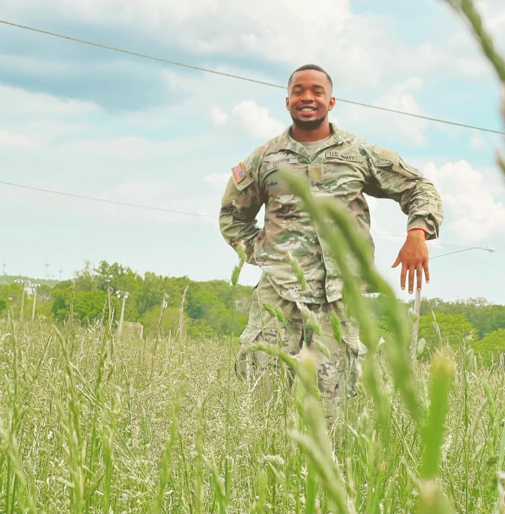

Before the algorithms, there was silence underwater. The discipline forged in the Army — precision under pressure, mission before self — is the operating system behind everything I build.
The U.S. Army Combat Diver qualification is one of the most demanding courses in the entire military training system. It requires mastery of underwater navigation, combat swimming, closed-circuit diving, underwater demolitions, and the ability to perform precision engineering operations in zero-visibility environments — often at night, often under hostile conditions.
As a 12 Delta (Combat Engineer), my primary MOS combined traditional combat engineering — breaching, emplacing obstacles, route clearance, bridge construction — with the specialized underwater dimension of Combat Diver operations. This meant that I was responsible for applying engineering principles in the one environment where a design flaw cannot be corrected after you're already 30 meters down.
"What the military taught me is not discipline in the way civilians imagine it — rigid and mechanical. It taught me that discipline is a form of respect for the complexity of reality. You are not fighting nature underwater; you are negotiating with it."
Military diving is a deeply mathematical practice. Decompression theory, gas laws (Boyle's, Henry's, Dalton's), nitrogen narcosis thresholds, current calculations, tide prediction, and underwater navigation via compass and distance all require real-time computation under physical and psychological stress. This early, embodied relationship with applied mathematics directly shaped my approach to machine learning: algorithms, like diving plans, must account for failure modes before they occur.
My military service gave me three things that no academic program can instill. First, a tolerance for ambiguity under pressure — the same mental posture required to debug a failing model at 2 a.m. or to defend a thesis before a hostile committee. Second, a systems-level instinct — the ability to see how individual components interact within a larger whole, whether that whole is a bridge, a unit, or a neural network. Third, a moral seriousness — a deep, lived understanding that technology — like ordnance — is morally neutral until a human decides how to use it.
Military service photos from my time as a 12 Delta and Combat Diver.

Dive qualification, underwater operations
Combat engineer field operations